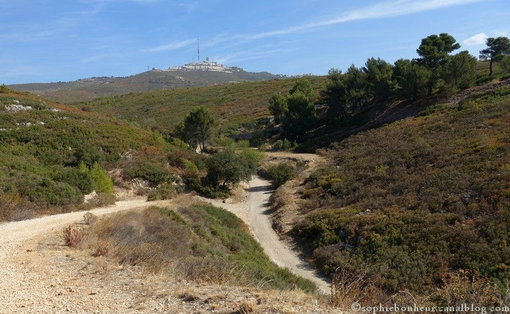
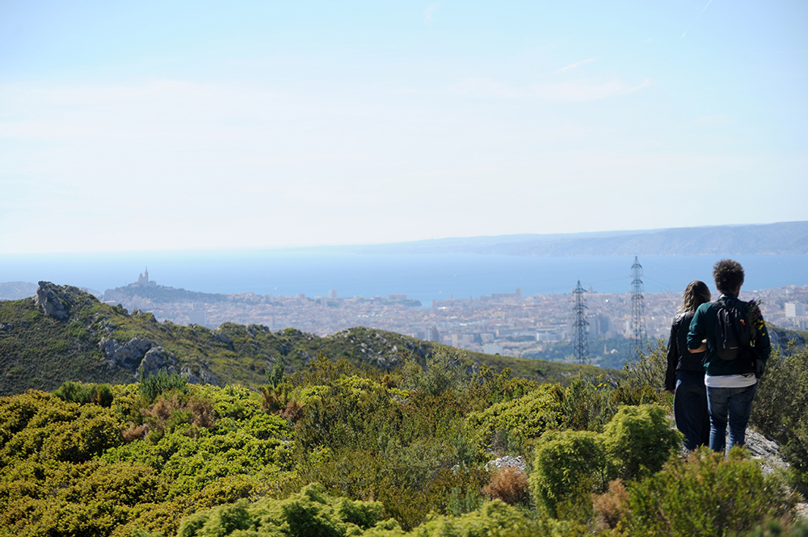
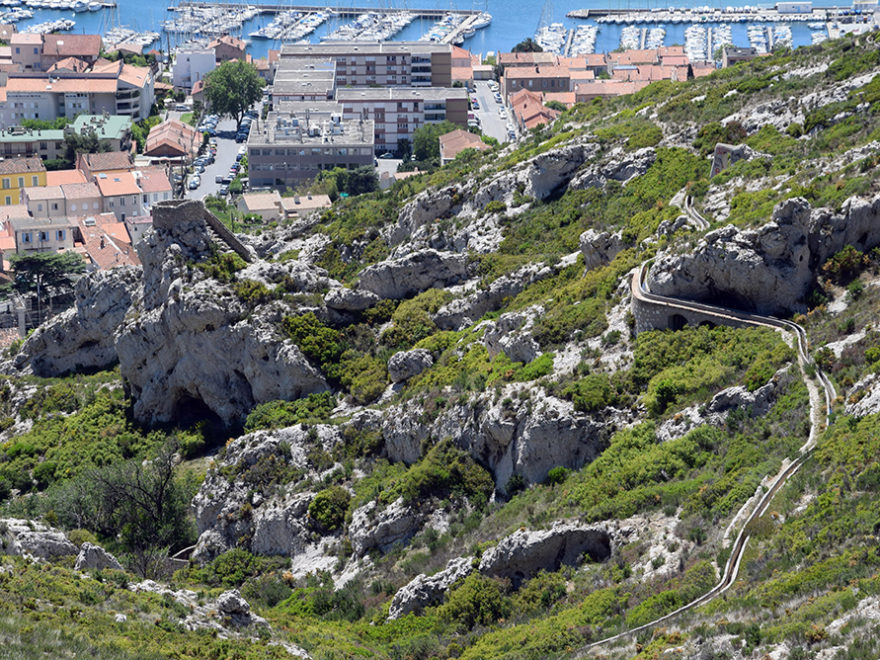
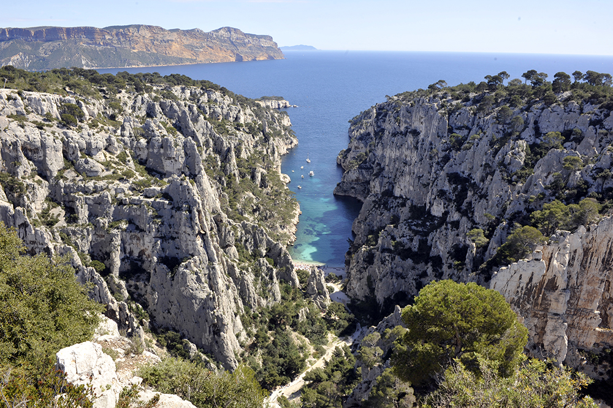
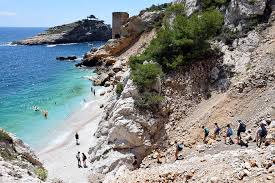
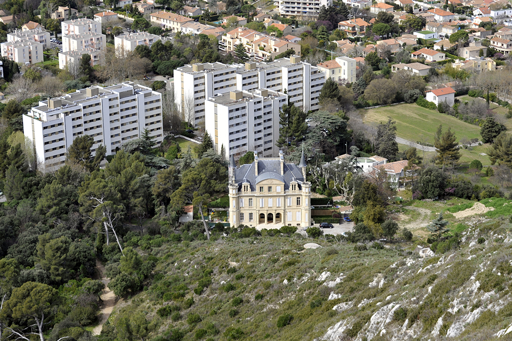

Randonnées  Massif de l'étoile  Circuit Saint-Marcel & domaine de la Forbine  Circuit colline de Verduron & valée de Séon  Calanque d'En Vau & Mont Puget  Fort de Niolon et calanque de l'Everine  Campagne Berger